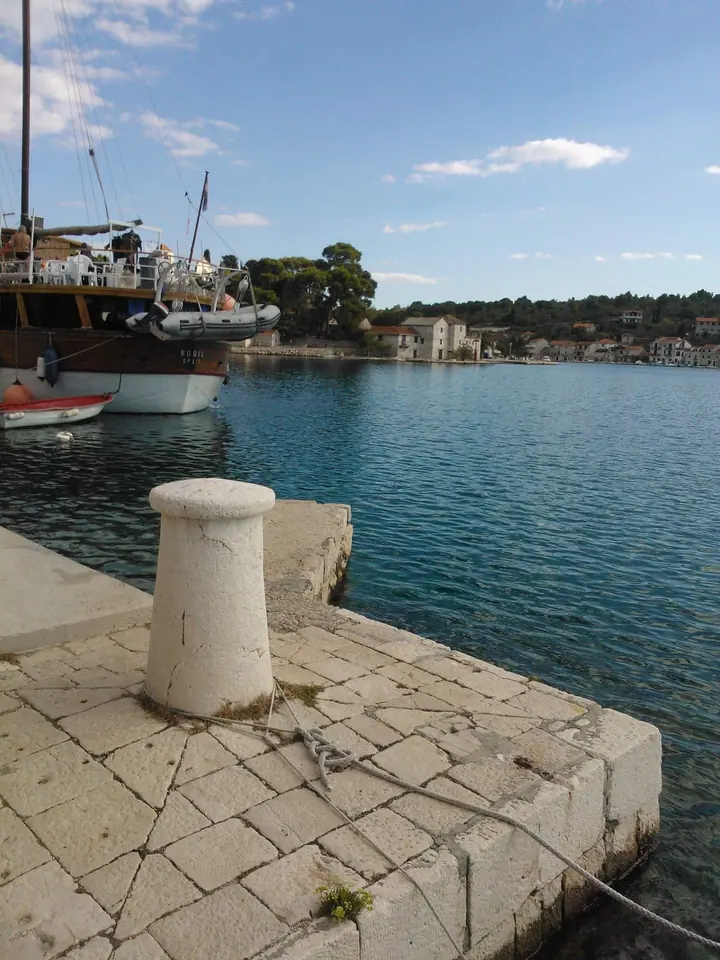
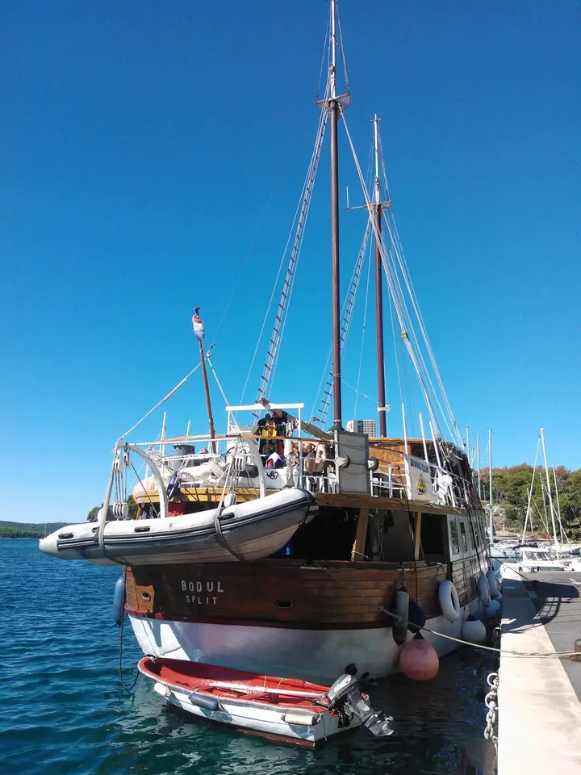
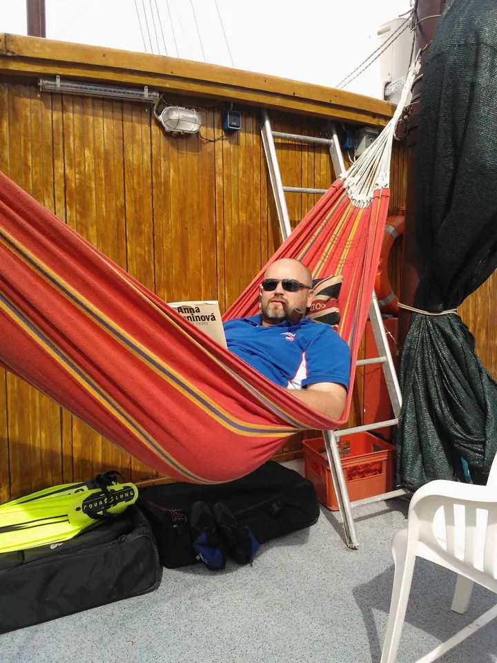
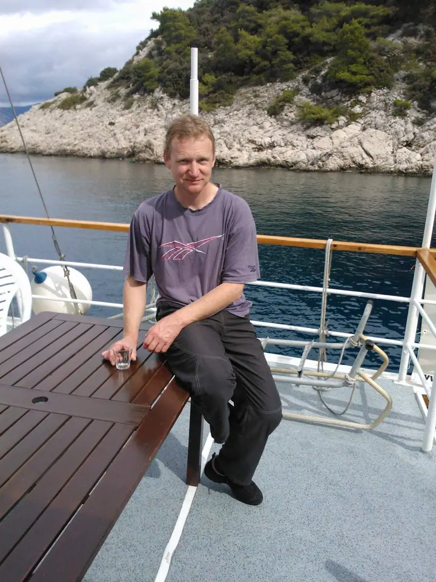

01 / 03
Klubové potápění
Jsme potápěčský klub a zakládáme si hlavně na přátelském přístupu k potápění i k lidem, kteří se kolem nás točí. Přidat se mohou potápky i sympatizanti.
Zeptat se na termín→



Potápění, kde jde hlavně o lidi
Zeptat se na termín →(01) Ahoj
Jmenuji se Míra Roučka, v klubu Lucky Divers mi říkají Profesor a dělám tu instruktora . Náš klub si zakládá na přátelském přístupu k potápění a k lidem, kteří se kolem točí . Fotky z našich výprav, třeba z lodi Bodul , sdílíme pro všechny potápky a sympatizanty.
(02) Co fotím
01 / 03
Jsme potápěčský klub a zakládáme si hlavně na přátelském přístupu k potápění i k lidem, kteří se kolem nás točí. Přidat se mohou potápky i sympatizanti.
Zeptat se na termín→02 / 03
Společně vyrážíme na moře lodí Bodul. Kromě potápění si užijeme i čas na palubě a večery v přístavu.
Zeptat se na termín→Dále nabízím
Jsem instruktor a v klubu se starám o potápění. Když si nevíte rady, ozvěte se mi a domluvíme se.
↗(04) Postup
Od první zprávy po hotovou galerii.
Krok 1 z 4
Napište na info@luckydivers.cz nebo mi zavolejte na 602 620 061.
Krok 2 z 4
Probereme, co od potápění čekáte a kam se s klubem chystáme.
Krok 3 z 4
Na výpravě se potápíme a užíváme si i společný čas na palubě.
Krok 4 z 4
Fotky z akcí najdete na našem Rajčeti, kde jsou pro všechny potápky a sympatizanty.
Na palubě, pod hladinou a hlavně spolu
(05) Za objektivem
Jmenuji se Míra Roučka, alias Profesor, a v Lucky Divers mám na starosti potápění. Jsem instruktor a podle kamarádů taky nesvržitelný klubový papaláš se sklony k autokracii. Kdo nás zná, ví, že to s tou vážností nepřeháníme.
Lucky Divers je potápěčský klub, kde jde hlavně o přátelský přístup k potápění a k lidem. Spolu jezdíme na výpravy, potápíme se a pak trávíme večery na palubě nebo v přístavu.
Klub netáhnu sám. Web má na starosti Pavel Strnad alias DrKozel a fotky na Rajčeti spravuje Petr Vyšanský alias Pupajz. Díky němu tam máme přes čtyři tisíce fotek, které jsou tu pro všechny potápky a sympatizanty.
Míra
Míra Roučka · Instruktor potápění, Potápěčský klub Lucky Divers
Zakládáme si na přátelském přístupu k potápění i k lidem, takže se nám ozvěte a domluvíme se.
S potápěním vám poradím já, Míra Roučka, na telefonu 602 620 061. Obecné dotazy pište na info@luckydivers.cz.
Všechny fotky jsou na našem Rajčeti luckydivers.rajce.idnes.cz. Spravuje je Petr Vyšanský alias Pupajz.
Napište Pupajzovi na pupicekp@seznam.cz a fotku obratem odstraní.
(07) Kontakt
Napište pár vět o tom, co si představujete, a termín, který se vám hodí.
info@luckydivers.cz